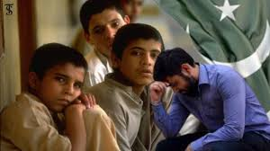
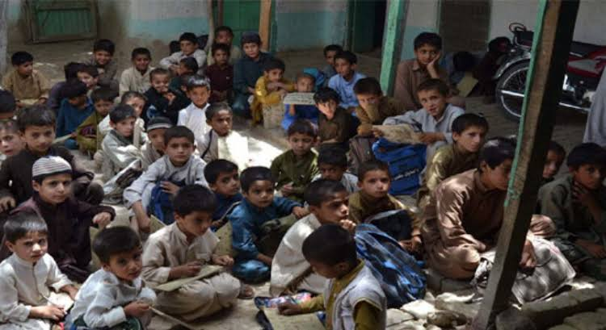
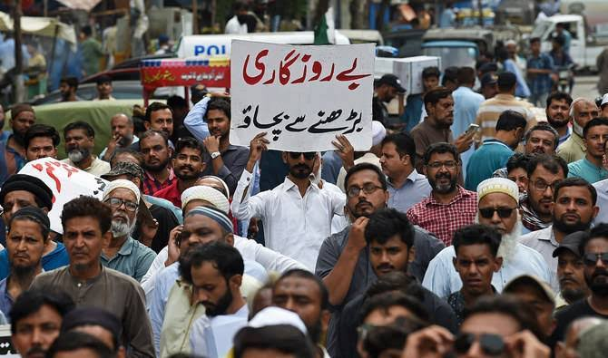
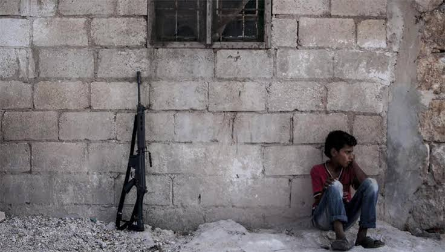
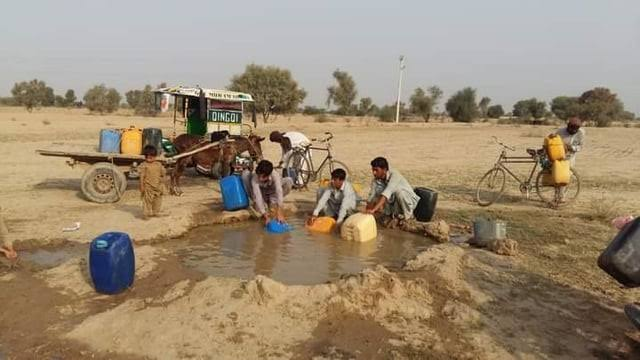
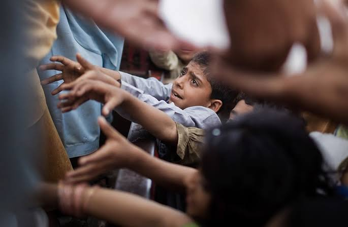
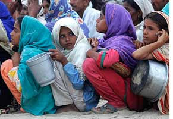
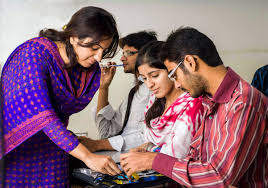

Problems faced by
PAKISTANI YOUTH

Pakistani youth face challenges including poverty, lack of education and employment opportunities, and exposure to radicalization. These issues can lead to increased crime, brain drain, and negative social consequences.
Here's a more detailed look at the challenges:
Poverty and Lack of Education:

Many Pakistani youth lack access to quality education and live in poverty, hindering their future prospects.
Unemployment and Lack of Opportunities:

High unemployment rates and limited job opportunities further exacerbate poverty and create a sense of frustration and despair among the youth.
Radicalization:

Exposure to extremist ideologies, often fueled by poverty and lack of opportunities, can lead to radicalization and violence.
Negative Influences:
Negative influences from political, religious, and social circles can also contribute to youth issues.
Brain Drain:
Lack of opportunities and a desire for a better life can lead to skilled youth migrating abroad, resulting in a loss for Pakistan.
Mental Health:

Youth are particularly vulnerable to mental health issues such as anxiety, depression, and substance abuse.
Lack of Healthy Entertainment and Resources:

Limited access to healthy entertainment, sports, and other resources can contribute to negative behaviors.
Social Injustice and Inequality:

Social injustice and inequality can fuel resentment and violence among marginalized youth.
Limited Access to Resources:

Lack of access to healthcare, education, and other essential resources further marginalizes youth.
Impact of Social Media:

The influence of social media, including the spread of misinformation and propaganda, can also contribute to various challenges.